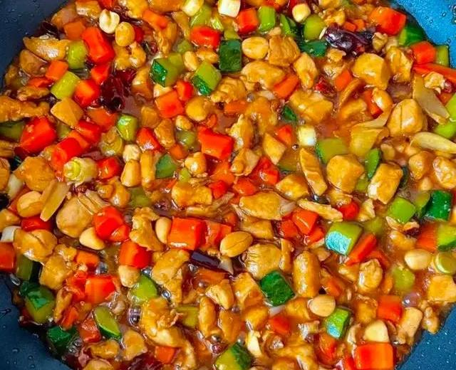

Home
酱汁减少，直到又好又浓稠

这道菜色泽红亮，味道鲜美，辣中带甜，是川菜中的经典代表。
成分
- 鸡胸肉
- 葱
- 姜
- 花生米
- 蒜
- 酱油
- 干辣椒
- 料酒
- 醋
- 花椒
- 白糖
- 淀粉
- 清水
- 食用油
步骤
- 准备食材：(1)鸡胸肉洗净，切成1厘米见方的丁。(2)花生米提前用水泡发，然后沥干水分备用。
(3)干辣椒剪成小段，去籽。 (4)葱切成段，姜切片，蒜切末。
- 腌制鸡肉： 将切好的鸡丁放入碗中，加入1汤匙料酒、1汤匙酱油、1茶匙盐和1汤匙淀粉，搅拌均匀，腌制15分钟。
- 调制宫保汁： 另取一个小碗，加入1汤匙酱油、1汤匙料酒、1汤匙醋、1汤匙白糖和适量清水，搅拌均匀备用。
- 炒制花生米： 锅中倒入适量食用油，油温升至五成热时，放入花生米，小火炸至金黄色，捞出沥油备用。
- 炒制宫保鸡丁：(1)锅中留底油，油热后放入花椒，小火炒香，然后捞出花椒。 (2)加入干辣椒段，小火炒至辣椒变色。
(3)加入葱段、姜片和蒜末，炒出香味。 (4)倒入腌制好的鸡丁，大火快速翻炒至鸡肉变色。
(5)倒入调好的宫保汁，翻炒均匀，让鸡肉充分吸收调料。 (6)加入炸好的花生米，快速翻炒均匀。
(7)最后加入剩余的淀粉水，勾芡，使菜肴看起来更加光亮。 (8)炒至汤汁浓稠，出锅前撒上葱花，翻炒均匀即可。
- 装盘： 将炒好的宫保鸡丁盛入盘中，可以撒上一些葱花作为装饰。